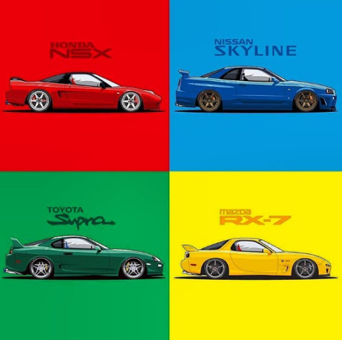

Sobre Nós
O Skyline GT-R é uma versão mais desportiva de um grande sucesso da marca, o Nissan Skyline. A versão GT-R possui o motor Nissan RB26DETT, de 6 cilindros em linha Bi-Turbo que gerava 276 HP. A sigla GT-R surgiu depois de uma vitória da Nissan em 1964 com o S54 2000 GT-B. Em 1973 o modelo GT-R deixou de ser produzido. Dezesseis anos depois a Nissan traz a sigla GT-R de volta com o modelo Nissan Skyline GT-R R32 com o motor RB26DETT e tração AWD e um motor de 285 HP.A geração R32, foi até 1994, ano em que foi substituída pelo R33 que muitos falavam que era o melhor GT-R da epoca. Em 1998 o R33 foi substituído pelo R34, tido como o melhor GT-R devido a potência superior à do R33 e seu tamanho reduzido, próximo ao tamanho do R32. Em 2003 ficou eternizado graças à sua participação em um dos filmes da franquia Velozes e Furiosos, retornando novamente em 2009 no quarto filme graças ao seu imenso sucesso. A sua produção foi interrompida em 2002. Em 2007 a Nissan divulgou o lançamento de um novo modelo GT-R em dezembro após o Tokyo Motor Show com o motor VR38DETT, um motor 3.8 de 6 cilindros em V, Bi-Turbo e 485 HP. Porém, o carro não seria mais uma versão desportiva do Skyline, e sim um modelo distinto chamado apenas de Nissan GT-R.
O Skyline GT-R é uma versão mais desportiva de um grande sucesso da marca, o Nissan Skyline. A versão GT-R possui o motor Nissan RB26DETT, de 6 cilindros em linha Bi-Turbo que gerava 276 HP. A sigla GT-R surgiu depois de uma vitória da Nissan em 1964 com o S54 2000 GT-B. Em 1973 o modelo GT-R deixou de ser produzido. Dezesseis anos depois a Nissan traz a sigla GT-R de volta com o modelo Nissan Skyline GT-R R32 com o motor RB26DETT e tração AWD e um motor de 285 HP. A geração R32, foi até 1994, ano em que foi substituída pelo R33 que muitos falavam que era o melhor GT-R da epoca. Em 1998 o R33 foi substituído pelo R34, tido como o melhor GT-R devido a potência superior à do R33 e seu tamanho reduzido, próximo ao tamanho do R32. Em 2003 ficou eternizado graças à sua participação em um dos filmes da franquia Velozes e Furiosos, retornando novamente em 2009 no quarto filme graças ao seu imenso sucesso. A sua produção foi interrompida em 2002. Em 2007 a Nissan divulgou o lançamento de um novo modelo GT-R em dezembro após o Tokyo Motor Show com o motor VR38DETT, um motor 3.8 de 6 cilindros em V, Bi-Turbo e 485 HP. Porém, o carro não seria mais uma versão desportiva do Skyline, e sim um modelo distinto chamado apenas de Nissan GT-R.